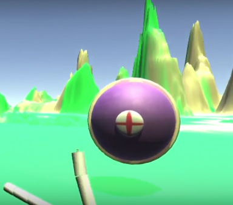
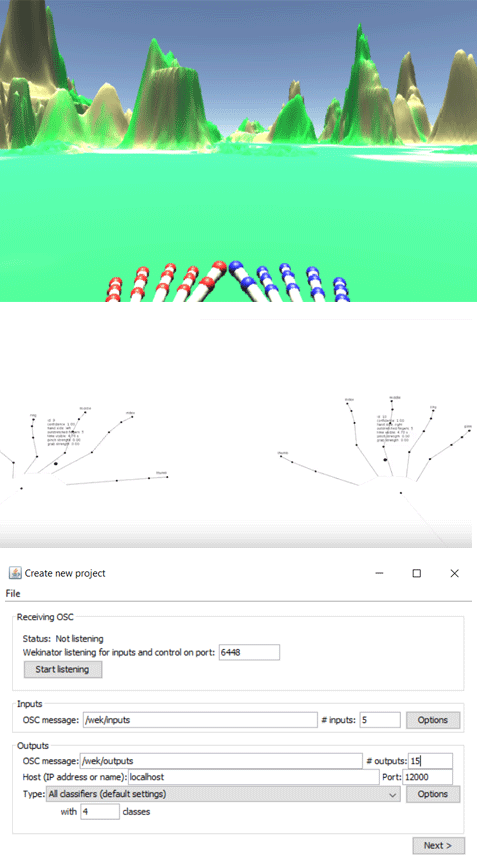
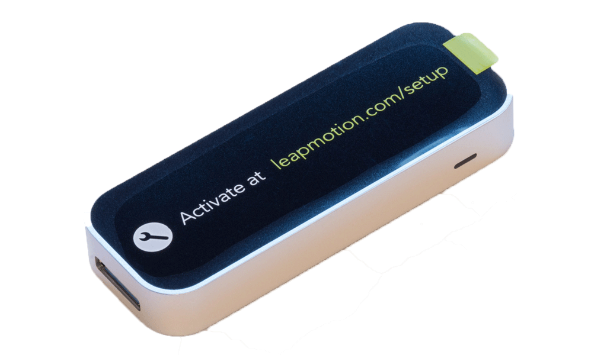
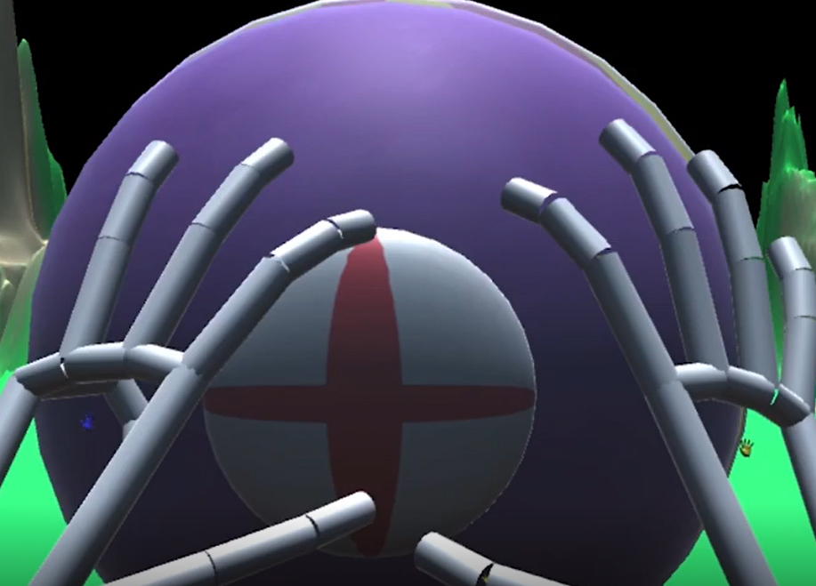
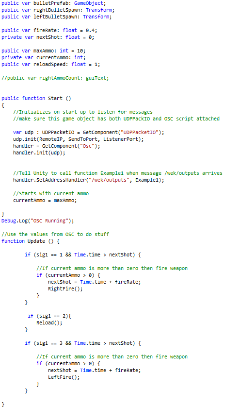

SOLO/UNITY PROJECT
3D project
OVERVIEW

What is the game?
The game is set in the Unknown where you must shoot a waves of enemies coming towards you, if you do not kill them then they will kill you. Have you fingers ready because this will be a bang.
The game was created using Wekinator, a training set, and a learning algorithm (k nearest neighbour) to program a game, using Unity, and a leap motion for controls.
Why create this game?
The project I decided to do was a game project for the leap motion using machine learning in which the player uses their fingers to shoot enemies and using voice commands to activate certain abilities such as freezing the enemies or healing the player. The intension for this is to see how the learning algorithm set for this would work and what algorithms could improve the features and training sets.
Feel free to view the source code for this project below:
SOFTWARE

Unity
The engine used for this project is Unity as it handles, C# and JavaScript scripts as the OSC Reciever is written in JavaScript and using Unity's inbuilt tools makes in effective for the project's purpose.
Processing
Processing deals with Java and using processing, created a sketch that handles 15 inputs which handles the 15 inputs of each hand and had an OSC sender that send the inputs into Wekinator.
Wekinator
Using Wekinator, it was able to interact between the Processing and Unity. Allowing it to learn the hand gesture it was trained and implements itself onto the game's control, allowing it to know what hand gestures call what action. For the training sets I used classification's k-nearest neighbour algorithm.
HARDWARE

Leap Motion
Used a leap motion to have hand detection so that players can use their hands to shoot the enemies that enter the level; this would give an immersive feel that they are actually using their hands to fire at enemies rather than using VR or Kinect.
DESIGN

Character Design
The design for this project was done via Unity's objects. The enemy was created using 5 shphere objects, one for the body, one as the ring, one for the eyeball and two for the eye shape; the textures for the game done on Photoshop and exported as a .png to the 'Texture' file. The leap motion hand models were assets taken from the leap motion sdk.
Level Design
Using the terrian, I was able to cerate the terrian and the mountains was created by Unity's inbuilt terrian tools which then using their tools, I grabbed two textures, created on Photoshop and using the paint tool, painted the terrian.
IMPLEMENTATION

Gameplay
You are able to be in control, your fingers are your weapon. Using a leap motion to detect hand motion, you must use your fingers to shoot the enemies as fast as you can and do NOT let the enemies get you first. This is done by a combination of softwares: Unity, Processing and Wekinator. Using a Processing sketch which detects your hand motion, Unity which has the receivers to execute the code and Wekinator which communicates between both input and output.
Code
The scripts for the player, enemy, collision and a day/night cycle, which were written in C# also the OSC and UDP were written in C# however, the OSCReceiver is written in JavaScript as it can identify the OSCSender signal better than in C#
Majority of the code for this project was written by myself; however, the OSC receiver was sample from Rebecca Fiebrink, http://wekinator.org/ and modified by myself so that it works in the game I have created which there were no documentions on how to make a game, using Leap Motion, Unity and Wekinator so it is a good direction of being the first to create a game that works quite well.
Algorithm
The algorithm that was used for this project was the k-nearest neighbour in which recognises the nearest neighbour on the position so if the “gun” position (class 1) was close the training set then it would go to class 1 and shoot.
Other Videos
Setup Video: https://youtu.be/JkhY9iZVCFI
Before & After: https://youtu.be/JkYykW-oSHU